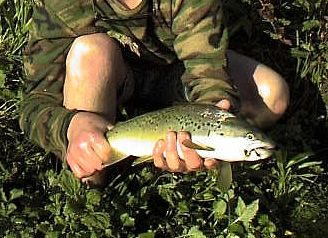

釣行日誌 ＮＺ編 「その後で」
水面の虹
1999/12/15(WED)-6
一見穏やかな牧場の川岸も、踏み込んでみると至るところに穴ボコがあり、トゲのある草もあったりして極めて歩きにくい。裸足のディーンはそんなことも気にせずズイズイと上流を目指す。
「ゴウ、ここから流れが二筋に分かれるんだけど、どっち側が釣りたい？」
見ると、中の島を挟んで穏やかな流れが左右に分流している。それじゃあということで、右側の分流を選び、投げやすい左岸に立つために流れを渡る。鞭の代わりにロッドを持って、粛々と渡る。
が、冷たい冷たい。ウェーダーとタイツ越しでもこの冷たさなのにディーンはよくこの流れに裸足で入る気になるなぁ.....と感心する。
さて、ポジションは良いし、フライは新品に替えたし、と思って水面を覗くと、ちょうど背後から傾きつつある太陽が燦々と照りつけ、私の動作の一部始終はスライドショーのように水面に投影されるのである。しかも、分流の流れ方からして、この先当分の区間では自分の影がすべて川面に映ってしまうようであった。おまけに光線の具合ははなはだ芳しくなく、水中の様子がとても見づらい。
『むむむ、マズイな.....』
と、今さら悔やんでも始まらないので、極力姿勢を低くし、水面の微妙な波紋や流れの形状から鱒の潜んでいそうなポケットを探して這いずって行くことにした。
『ははぁ、１尾めっけ』
さらさらと流れ込む瀬の中に、小さめではあるが褐色の背中がしきりと餌を追って右往左往している。今日の魚は見つけさえすれば食い気はありそうだな....と希望的観測を行い、確実な距離から自分が見てもおいしそうな12番のロイヤルウルフを落とす。
『うーん、なんだなんだ？ ハ！ 作りもんか....』
などと呟いた鱒は、水面まで鼻先を寄せてフライを確認した後、しっかりと見破った。
『ぐぐ。 さすがは歴戦の生き残り。賢いぜ』
そこですかさずフライをアダムスの14番に替え、再度、鱒の筋の上流1.5mドンピシャの位置にほわりと乗せる。
『ム！ ハハァ.....またか....』
またしても見切った鱒は、別の流下物ににじり寄っている。おかしいなぁ？ あれだけ動いて餌を探しているのになんでドライを喰わないんだ？
仕方がないので、昨年いい思いをさせてもらったゴム脚でも投げ込もうかと思ったが、ちょっと流れがデリケートだったので、無難なフェザントテールを結ぶ。
ピチョン....とかすかな音を立てて澪筋にニンフが沈み、鱒の位置辺りを通過するぞ...と思った瞬間魚体がブルブルッとシェイクするのが見えた。
「ストライク！」
確実に合った。竿を立て、次の突進に備える。小さいなと思った魚影であるが、重さと体側の反射光からはまずまずのサイズのようである。あちらこちらに点在する藻のかたまりに向けて逸走する鱒を追い、立ち上がって水中に立ち込むことにする。
腰まで水に浸かり、冷たく重い圧力を感じながら竿を立て、鱒に引かれて流れを歩み出す。グイグイグイグイとラインが引かれ、水面に曳航の飛沫を上げる。水面を照らす夕日がしぶきのあいだに虹色を見せてくれる。
『ああ、これがウェストランドだ......』
と、感動にひとりよがりしていると、どこからか出し抜けに大声があがる。
「グッドラック！」
「なーんだぁ？ 見てたの？」
見るとディーンが草むらの間から顔だけを覗かせている。
ネットが無いので取り込みが難しいが、鱒の体力の消耗と、リリース後の回復を考えるとあまり長引かせるわけにも行かず、３Ｘのティペットに頼って岸沿いの藻の中になんとか取り込む。
「おめでとう！」
「いやぁ、渋かったけど、結局ニンフを喰ったよ」
６月にオークランドで買った新品のキルウェルの２番目の釣果は、しっかりとニンフをくわえた、まだ顔が幼いがコンディションの良い銀色のブラウントラウトであった。

余談ではあるが、この竿の最初の釣果はイトウである。（詳細はこちら）
１尾ずつ釣果を上げ、ご機嫌の二人組は足取りも軽く最初の橋までやって来た。
「あの１尾まだいるかな？」
欄干から覗くディーンは、しばし水面を伺っていたが最初に目撃した鱒の姿は無かった。
「橋の下の魚はスレてんなぁ......あれ、まだ直ってないな？」
ディーンの話によると、誰かが立てた「キャッチ・アンド・リリース」の看板を、他の誰かが引き抜いてしまったらしい。ニュージーランドでは、Ｃ＆Ｒの概念・取り組みはまだ新しいので、特に地方部ではなじみが薄く、地元の人から反感を買っている面もあるようである。
午後８時のスプリングクリークはまだ明るかったが、十分満足した二人はそこで切り上げてハイラックスに乗り込む。日差しで熱せられた車内であったが、鱒の体の冷たさがまだ掌に残ってるような気がした。
家に戻ってみると、ネルソンで絵の勉強をしているランス君がクリスマス休みで帰郷しており、久しぶりの家族水入らずの会話に花が咲いていた。昨年会った時と思うとだいぶ顔が大人の風貌を帯びてきたのに驚かされた。
今日は、なんとか、最初の１尾を釣ることが出来たので、安堵の中ベッドに沈んだ。
釣行日誌ＮＺ編 目次へ
サイトマップ
ホームへ
お問い合わせ